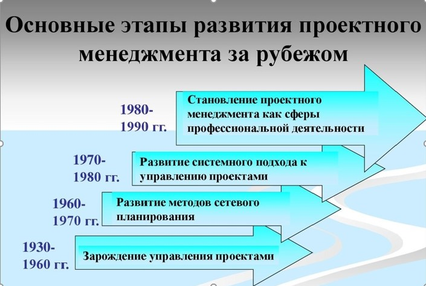
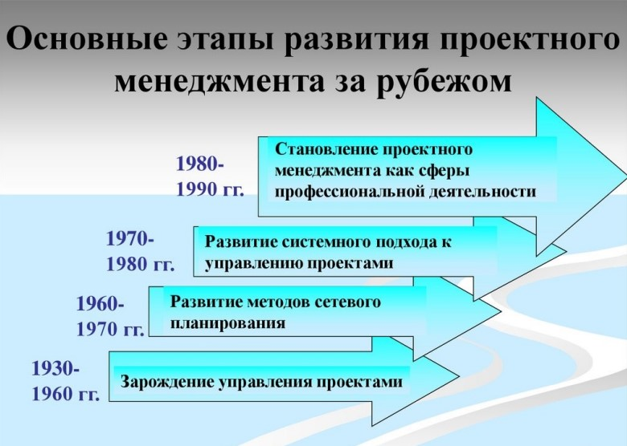
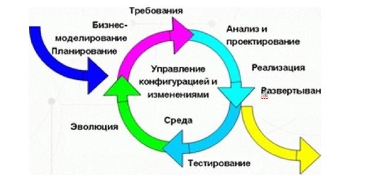
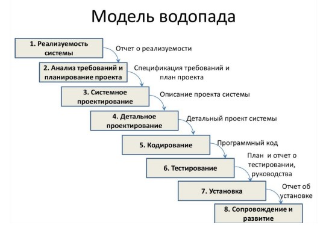
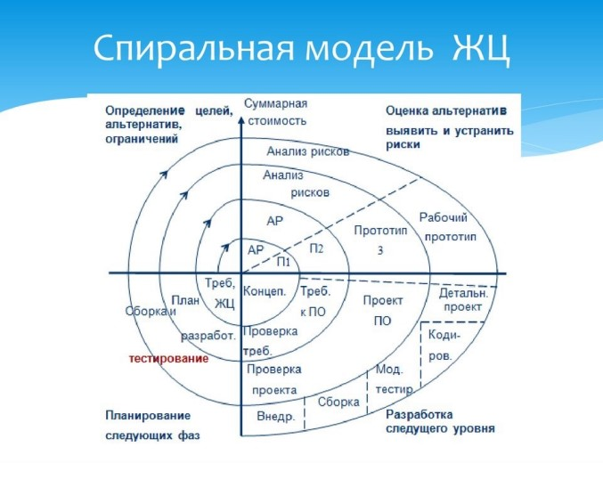
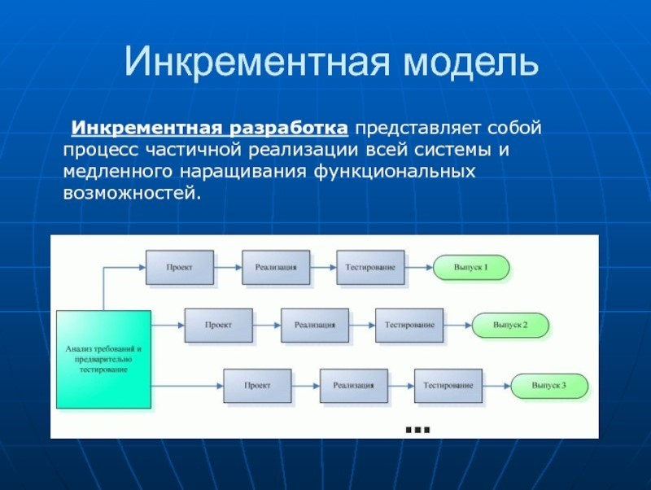
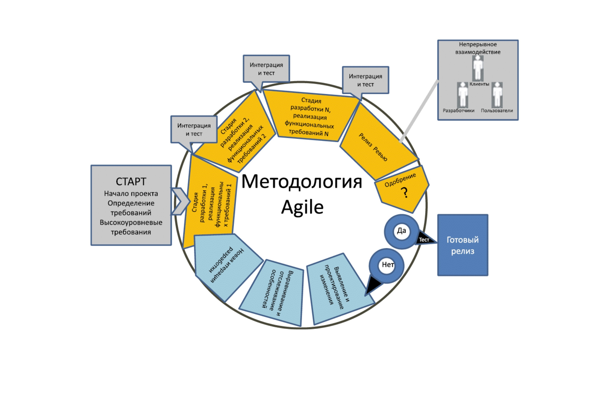
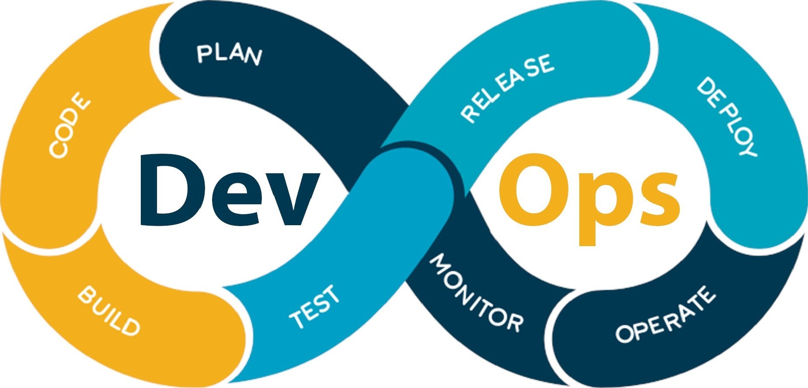

Римский инженер и архитектор Марк Витрувий в 1 в. до нашей эры в своем трактате «10 книг об архитектуре» дал проектированию следующее определение:
Однако история развития проектного менеджмента как дисциплины относительно молода: ее относят к 30-м годам ХХ века и связывают с разработкой специальных методов координации инжиниринга крупных проектов в США авиационных в «US Air Corporation» и нефтегазовых в фирме «Ехоп».
В СССР в этот же период начала развиваться теория и практика поточной организации работ по реализации крупных строительных проектов.
Появление новой дисциплины
В середине прошлого века началось активное развитие информационных технологий. Военные ведомства и передовые предприятия осознали важность создания информационных систем. Появление вычислительной техники сделало обработку больших объёмов информации и автоматизацию процессов ключевой задачей для военного превосходства и конкурентных преимуществ. Разработчики крупных информационных систем поняли необходимость средств проектирования и моделирования бизнес‑процессов для повышения эффективности и сокращения сроков разработки. Стоимость устранения ошибок растёт в геометрической прогрессии: на стадии проектирования она в 2 раза выше, на стадии тестирования — в 10 раз, а на стадии эксплуатации — в 100 раз по сравнению со стадией анализа бизнес‑процессов и разработки технического задания.
При создании сложных информационных систем зачастую очень трудно понять требования персонала заказчика. Они могут быть сформулированы некорректно, а в процессе анализа конкретных бизнес-процессов даже измениться. Поэтому появление методологий современного проектирования и моделирования информационных систем было насущной задачей, над которой работали специалисты разных стран.
Программная инженерия - раздел компьютерных наук (Computer Science), изучающий методы и средства построения компьютерных программ как инженерной регламентированной деятельности коллективов разработчикое программных продуктов (ПП):
Инженерная деятельность по всем аспектам изготовления ПП планируется и декомпозируется на отдельные работы, распределяющиеся по разным категориям исполнителей,
(каскадная модель или «водопад»)
Итерационный подход в разработке программного обеспечения — это выполнение работ параллельно с непрерывным анализом полученных результатов и корректировкой предыщщих этапов работы.
Проект при этом подходе в каждой фазе развития проходит повторяющийся цикл PDCA:
Проект при этом подходе в каждой фазе развития проходит повторяющийся цикл PDCA:
Планирование — Реализация — Проверка — Оценка
 Подробнее о методологияхТрадиционные методологии построены на последовательном выполнении всех фаз проекта, и конечный продукт будет получен только после выполнения всех этапов. Возвращение на предыдущий этап не предусмотрено и при появлении критических ошибок весь проект начинается сначала. Основным примером таких методологий разработки является каскадная модель или модель Водопад
Данная модель внесла фундаментальный вклад в понимание процессов разработки ПО следующими утверждениями:
процесс должен подчиняться дисциплине, разумному планированию и управлению; реализация продукта должна быть отложена до полного понимания целей этой реализации.Спиральная модель стала следующим (после водопадной) этапом развития методологий разработки, поскольку она решает основную проблему каскадной модели.
Итеративная модель предполагает разбиение жизненного цикла проекта на последовательность итераций, каждая из которых напоминает ”мини-проект” , включая все фазы жизненного цикла в применении к созданию меньших фрагментов функциональности, по с авнению с п оекгом, в целом.
  Общая концепция DevOps заключается в усилении кооперации между группами разработки (DEVelopments) и эксплуатации(ОРегайоп9 в рамках одной организации, несущими ответственность за разработку ПО. Данная методология это без преувеличения новый виток эволюции методологий разработки, поскольку ориентирована не только на удовлетворение требований заказчика в жестко определенные сроки, но и повышение качества и стабильности продукта.